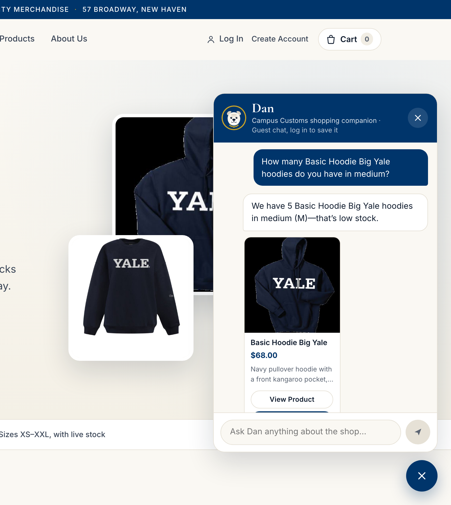
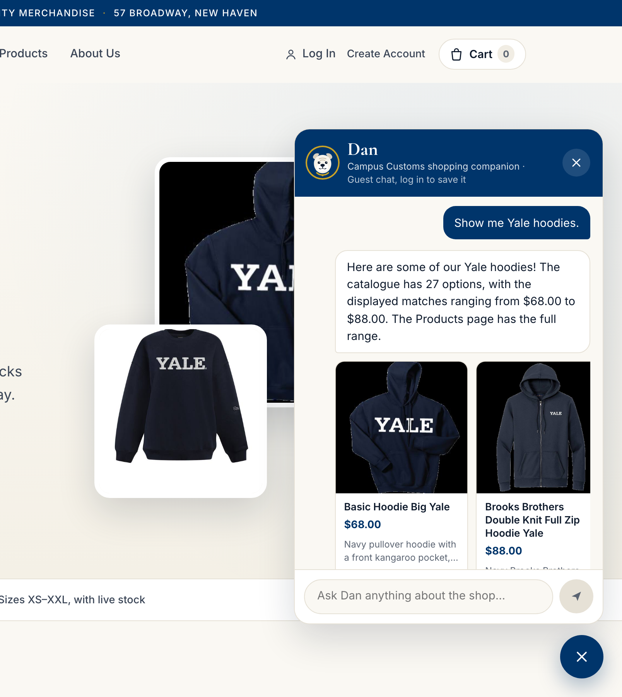
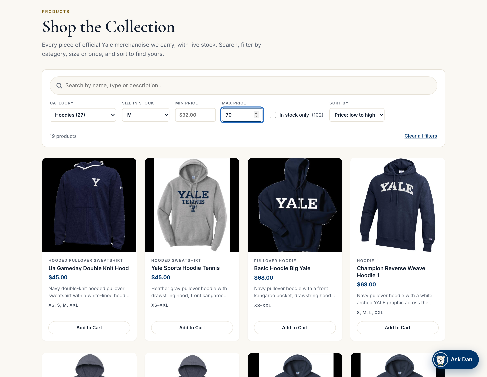

Campus Customs — Problem 11 App Check
This page documents tests of the live Campus Customs website (React frontend, FastAPI backend and the PydanticAI agent “Dan”), run on October 4, 2026. Every screenshot is a real capture of the running site taken by a browser; nothing is mocked.
1. Inventory Chat Lookup

Asked “How many Basic Hoodie Big Yale hoodies do you have in medium?”, the agent answered “We have 5 … in
medium (M), that’s low stock” and showed the product card at $68.00. This matches the database exactly
(inventory: size M, quantity 5; catalogue: price 68.0), showing the stock figure comes from
the database and is not invented.
2. Dynamic Search-Result Cards

Asked “Show me Yale hoodies.” on the home page, the agent replied that the catalogue has 27 hoodies, and the chat rendered product cards (image, name, price, short description, View Product / Add to Cart) inside the conversation. These cards appeared only in response to the message: they were built from the agent’s structured product-search result (12 matches returned), since the home page behind the chat has no product grid.
3. Problem 9 Usability Feature — Product Search, Filtering and Sorting

With Category “Hoodies”, Size in stock “M”, Max price 70 and “Price: low to high” selected, the Products page narrowed 102 products to 19 hoodies ordered from $45.00 up. That matches the backend API for the same filters (19 results, first two $45.00), showing filtering and sorting working together on live database data.